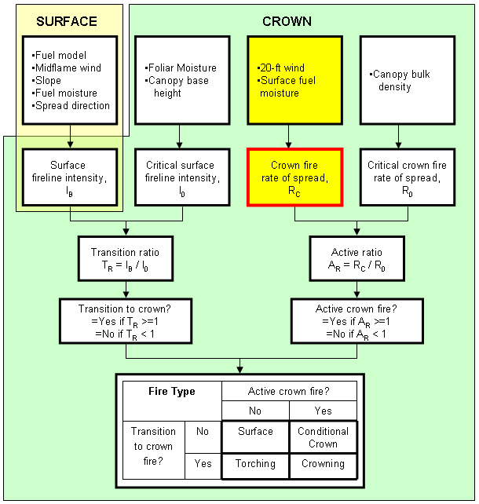
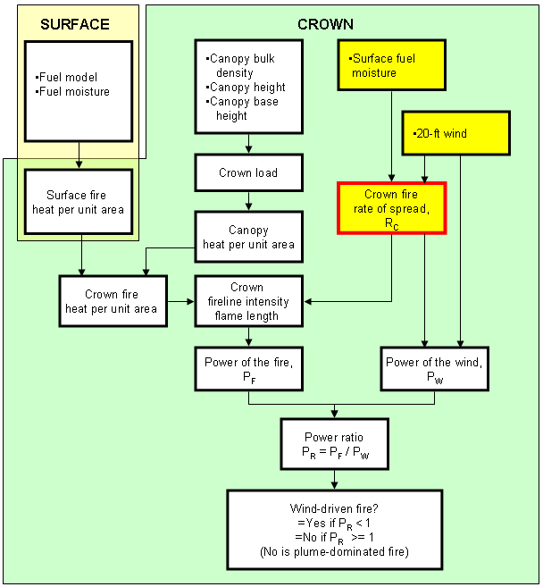

|
|
Crown ROS |
The crown fire rate of spread is the forward spread rate of a crown fire estimated using Rothermel's (1991) crown fire spread model. It is the overall spread for a sustained run over several hours. The spread rate includes the effects of spotting. It is calculated from 20-ft wind speed and surface fuel moisture values. It does not consider a description of the overstory.
|
I/O |
Module |
If |
Notes |
|
Input |
None |
|
|
|
Output |
CROWN |
|
|
The crown fire spread model is not physically-based, but is rather a simple correlation between the spread rates of some crown fires and calculations of the Rothermel (1972) surface fire model. The model does not include a description of either the surface or crown fuel. It is a function of only the 20-ft wind speed and surface fuel moisture values.
Rothermel (1991) termed this average rate of spread. He suggests that a "near maximum" rate of spread can be 1.7 times this average value.
This calculated crown fire rate of spread is compared to a critical crown fire rate of spread (VanWagner 1977) to determine whether an active crown fire is possible.
Calculation of crown fire rate of spread in BehavePlus does not include a calculation of crown fraction burned (Van Wagner 1993, Scott and Reinhardt 2001).
|  |
|  |